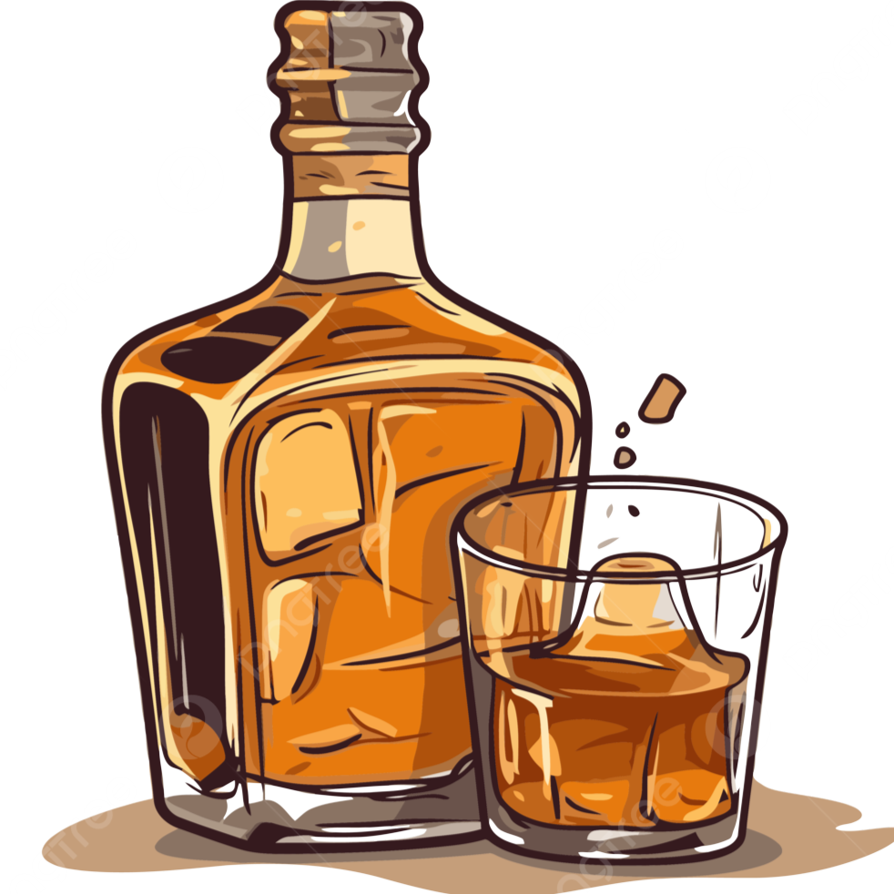

There is a plan in the works to visit the state of Kentucky and go on what is called a Bourbon Trail. What this is, is a tour of several of the distilleries that makes the American spirit, Bourbon.
Some might have heard the phrase, "All bourbon is whiskey, but not all whiskey is bourbon." There are several laws dating back to prohibition on what can legally be distilled and sold as bourbon. There is a deep and rich history of the profduction and make of many different crafts. Some names like Elija Craig and Jack Daniels are iconic in the bourbon/ whiskey world.
..........
..........